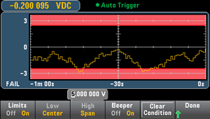
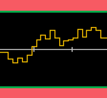
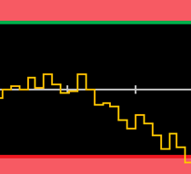
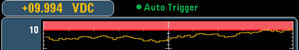
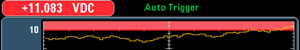
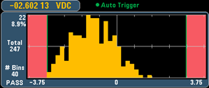
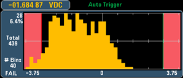
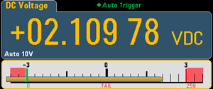
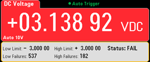

Limit checking indicates how many samples have exceeded specified limits and visually indicates when the limits are exceeded.
The limits menu is accessed from the [Math] menu.

The first softkey enables or disables limits. The second and third softkeys specify the limits either as high and low values or as a span around a center value. For example, a Low limit of -4 V and a High limit of +7 V are equivalent to a Center of 1.5 V and a Span of 11 V.
The Beeper softkey enables or disables beeping when limits are violated (this also enables or disables the beeper for the other functions that use the beeper - probe hold, diode, continuity, and errors. Clear Condition resets the limit borders to green, as described below.
The display uses colors to indicate limits and limit violations.
The limit area is shown in light red on the graph. The limit borders are green (shown below) as long as the limits have not been exceeded.

When a limit is exceeded, the border turns red. In the image below, the top border is still green, but the bottom border has changed to red because the trend line has gone into the lower limit area.

The border will remain red even if the trend line moves out of the limit area. When the trend line is within limits, you can reset the borders to green by pressing Clear Condition.
Note also that the number of the newest displayed measurement, +09.994 VDC below, indicates whether the measurement is within limits. Because the limit is 10 V, the 9.994 VDC value is shown with the standard background.

In contrast, the 11.083 VDC reading is highlighted in red to indicate that it is outside the limits.

The same color scheme applies to histograms. In the image below, the green vertical lines that separate the black histogram background from the light red limit areas indicate that limits have not been exceeded.

In the image below, the lower (left) limit border is red, indicating that the lower limit has been exceeded. (The reading in the upper left corner (-01.68487 VDC) is within limits, so it is not red.)

The bar meter (below) uses the same color scheme. The green limit border on the left indicates that the lower limit has not been exceeded, and the red limit border on the right indicates that the upper limit has been exceeded. The numbers 0 and 259 below the light red limit areas indicate how many times each limit has been exceeded, and the word FAIL indicates that a limit has been exceeded.

The bright red color (shown below) indicates that the displayed measurement exceeds the limits. The Number display also indicates how many times the limits have been exceeded.
